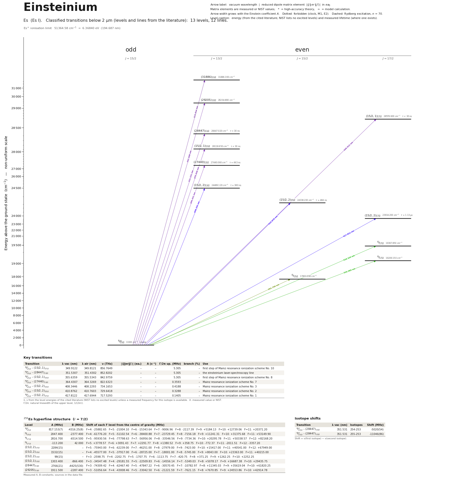

Einsteinium energy level diagram
Energy levels and transitions of neutral einsteinium (Es I): 13 levels and 12 classified lines below 2 µm taken from the cited literature, each line with its vacuum wavelength and frequency. The NIST Atomic Spectra Database lists only the ground level and the ionisation limit of einsteinium, so the level energies on this page are those of the literature sources named below.
Hover a line or a level to isolate it, click to keep it selected. Scroll to zoom, drag to move.

Download: diagram (PDF) diagram (SVG) transitions (CSV) levels (CSV) source code

Key transitions of einsteinium
| Transition | λ vac (nm) | λ air (nm) | ν (THz) | |⟨J‖er‖J′⟩| (ea₀) | A (s⁻¹) | Γ/2π up. (MHz) | branch (%) | Use |
|---|---|---|---|---|---|---|---|---|
| 4I°15/2 – (15/2,1)17/2 | 349.9122 | 349.8121 | 856.7649 | – | – | 5.305 | – | first step of Mainz resonance ionization scheme No. 10 |
| 4I°15/2 – (28447)13/2 | 351.5307 | 351.4302 | 852.8202 | – | – | 5.305 | – | the einsteinium laser-spectroscopy line |
| 4I°15/2 – (15/2,1)13/2 | 355.6359 | 355.5343 | 842.9759 | – | – | 5.305 | – | first step of Mainz resonance ionization scheme No. 8 |
| 4I°15/2 – (27440)13/2 | 364.4307 | 364.3269 | 822.6323 | – | – | 0.3593 | – | Mainz resonance ionization scheme No. 7 |
| 4I°15/2 – (15/2,2)13/2 | 408.3446 | 408.2293 | 734.1653 | – | – | 0.4188 | – | Mainz resonance ionization scheme No. 3 |
| 4I°15/2 – (15/2,2)15/2 | 410.8762 | 410.7603 | 729.6418 | – | – | 0.3288 | – | Mainz resonance ionization scheme No. 2 |
| 4I°15/2 – (15/2,2)17/2 | 417.8122 | 417.6944 | 717.5293 | – | – | 0.1405 | – | Mainz resonance ionization scheme No. 1 |
λ, ν from the level energies of the cited literature (NIST lists no excited levels) unless a measured frequency for this isotope is available. A: measured value or NIST. Γ/2π: natural linewidth of the upper level, 1/(2πτ).
253Es hyperfine structure (I = 7/2)
| Level | A (MHz) | B (MHz) | Shift of each F level from the centre of gravity (MHz) |
|---|---|---|---|
| 4I°15/2 | 817.153(7) | -4316.25(8) | F=4: -25882.65 F=5: -21004.10 F=6: -15343.64 F=7: -9006.96 F=8: -2117.39 F=9: +5184.13 F=10: +12739.06 F=11: +20371.20 |
| 6I15/2 | 2047.400 | -2377.400 | F=4: -61776.20 F=5: -51102.54 F=6: -38400.88 F=7: -23729.45 F=8: -7156.18 F=9: +11241.31 F=10: +31375.68 F=11: +53149.90 |
| 6I17/2 | 2816.700 | -6514.500 | F=5: -95930.56 F=6: -77798.63 F=7: -56956.06 F=8: -33546.56 F=9: -7734.36 F=10: +20295.78 F=11: +50338.57 F=12: +82168.20 |
| 6I17/2 | -113.200 | 42.000 | F=5: +3778.57 F=6: +3091.43 F=7: +2291.77 F=8: +1380.52 F=9: +358.75 F=10: -772.37 F=11: -2011.51 F=12: -3357.20 |
| (15/2,2)17/2 | 2284(15) | – | F=5: -75943.00 F=6: -62239.00 F=7: -46251.00 F=8: -27979.00 F=9: -7423.00 F=10: +15417.00 F=11: +40541.00 F=12: +67949.00 |
| (15/2,2)15/2 | 1532(15) | – | F=4: -45577.00 F=5: -37917.00 F=6: -28725.00 F=7: -18001.00 F=8: -5745.00 F=9: +8043.00 F=10: +23363.00 F=11: +40215.00 |
| (15/2,2)13/2 | 99(15) | – | F=3: -2598.75 F=4: -2202.75 F=5: -1707.75 F=6: -1113.75 F=7: -420.75 F=8: +371.25 F=9: +1262.25 F=10: +2252.25 |
| (15/2,1)13/2 | 1303.400 | -866.400 | F=3: -34547.48 F=4: -29181.55 F=5: -22509.83 F=6: -14556.14 F=7: -5349.03 F=8: +5078.17 F=9: +16687.38 F=10: +29435.75 |
| (28447)13/2 | 2766(21) | -4425(530) | F=3: -74309.42 F=4: -62467.40 F=5: -47847.22 F=6: -30570.45 F=7: -10782.97 F=8: +11345.03 F=9: +35619.04 F=10: +61820.25 |
| (29205)13/2 | 1911.500 | -2287.400 | F=3: -51056.64 F=4: -43008.46 F=5: -33042.50 F=6: -21221.59 F=7: -7621.15 F=8: +7670.85 F=9: +24553.86 F=10: +42914.78 |
Measured A, B constants; sources in the data file.
Isotope shifts
| Transition | λ vac (nm) | Isotopes | Shift (MHz) |
|---|---|---|---|
| 4I°15/2 – (28447)13/2 | 351.531 | 254-253 | -5020(54) |
| 4I°15/2 – (28447)13/2 | 351.531 | 255-253 | -11046(86) |
Shift = ν(first isotope) − ν(second isotope).
Listed Es transitions below 2 µm
| Lower level | Upper level | λ vacuum (nm) | λ air (nm) | ν (THz) | Type | |⟨J‖er‖J′⟩| (ea₀) | A (s⁻¹) | Branching (%) | Source of matrix element / A |
|---|---|---|---|---|---|---|---|---|---|
| 4I°15/2 | (31886)13/2 | 313.6143 | 313.5235 | 955.9272 | E1 | – | – | – | – |
| 4I°15/2 | (29205)13/2 | 342.4084 | 342.3102 | 875.5406 | E1 | – | – | – | – |
| 4I°15/2 | (15/2,1)17/2 | 349.9122 | 349.8121 | 856.7649 | E1 | – | – | – | – |
| 4I°15/2 | (28447)13/2 | 351.5307 | 351.4302 | 852.8202 | E1 | – | – | – | – |
| 4I°15/2 | (15/2,1)13/2 | 355.6359 | 355.5343 | 842.9759 | E1 | – | – | – | – |
| 4I°15/2 | (27440)13/2 | 364.4307 | 364.3269 | 822.6323 | E1 | – | – | – | – |
| 4I°15/2 | (15/2,2)13/2 | 408.3446 | 408.2293 | 734.1653 | E1 | – | – | – | – |
| 4I°15/2 | (15/2,2)15/2 | 410.8762 | 410.7603 | 729.6418 | E1 | – | – | – | – |
| 4I°15/2 | (15/2,2)17/2 | 417.8122 | 417.6944 | 717.5293 | E1 | – | – | – | – |
| 4I°15/2 | 6I17/2 | 516.3196 | 516.1758 | 580.6335 | E1 (intercombination) | – | – | – | – |
| 4I°15/2 | 6I17/2 | 520.5852 | 520.4403 | 575.8758 | E1 (intercombination) | – | – | – | – |
| 4I°15/2 | 6I15/2 | 561.7002 | 561.5444 | 533.7232 | E1 (intercombination) | – | – | – | – |
Reduced dipole matrix elements follow the convention A = ω³|d|²/(3πε₀ħc³(2J′+1)), with J′ the upper level. Tags show where a number comes from: measured, NIST compilation, high-accuracy theory, or a model calculation.
Es energy levels
Es⁺ ionisation limit 51364.58 cm⁻¹ = 6.36840 eV (194.687 nm)
Sources
- Blaise & Wyart, 'Selected Constants: Energy Levels and Atomic Spectra of Actinides' (Tabl…
- Blaise & Wyart, 'Selected Constants: Energy Levels and Atomic Spectra of Actinides' (Tabl…
- Goodman, Diamond & Stanton, Phys. Rev. A 11, 499 (1975) (atomic-beam magnetic resonance),…
- Nothhelfer, Albrecht-Schoenzart, Block, Chhetri, Duellmann, et al., 'Nuclear structure in…
- Weber, Albrecht-Schoenzart, Block, Chhetri, Duellmann, et al., 'Atomic-structure investig…
- Weber, Albrecht-Schoenzart, Block, Chhetri, Duellmann, et al., 'Atomic-structure investig…
- Weber, Albrecht-Schoenzart, Block, Chhetri, Duellmann, et al., 'Atomic-structure investig…
- optical emission spectroscopy (ref. [11] of the paper), as quoted in Nothhelfer, Albrecht…
Two data sets are merged: (1) 253Es emission-spectrum levels and the strongest classified lines from the archived Laboratoire Aime Cotton database (compilation, no uncertainties printed); (2) 254Es laser resonance ionization (Mainz, 2022): ten first excited states with lifetimes, hyperfine constants and the ionization potential. Lifetimes printed as 30 ns are upper limits (bound). Hyperfine constants taken from the LAC table are converted from 10^-3 cm^-1 to MHz (derived). Isotope shifts are nu(first) - nu(second). relative_intensity is the emission intensity printed in the LAC wavelength table (100 ... 10 000); for the laser lines it was attached by wavelength coincidence (derived matching, see each note).
Atoms with measured data
- Lithium-632 levels, 85 lines
- Lithium-732 levels, 85 lines
- Beryllium-917 levels, 26 lines
- Sodium-2336 levels, 106 lines
- Magnesium-2418 levels, 61 lines
- Magnesium-2518 levels, 61 lines
- Potassium-3934 levels, 84 lines
- Potassium-4034 levels, 84 lines
- Potassium-4134 levels, 84 lines
- Calcium-4035 levels, 61 lines
- Calcium-4335 levels, 61 lines
- Rubidium-8536 levels, 94 lines
- Rubidium-8736 levels, 94 lines
- Strontium-8740 levels, 70 lines
- Strontium-8840 levels, 70 lines
- Caesium-13331 levels, 79 lines
- Barium-13744 levels, 89 lines
- Barium-13844 levels, 89 lines
- Dysprosium-16339 levels, 55 lines
- Dysprosium-16439 levels, 55 lines
- Ytterbium-17118 levels, 26 lines
- Ytterbium-17418 levels, 26 lines